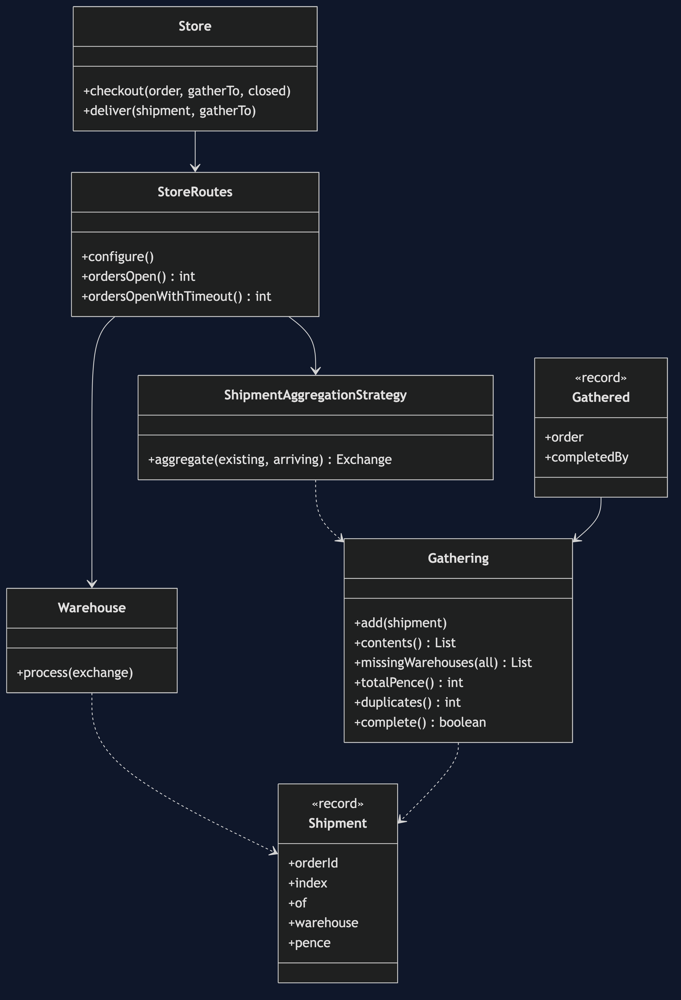
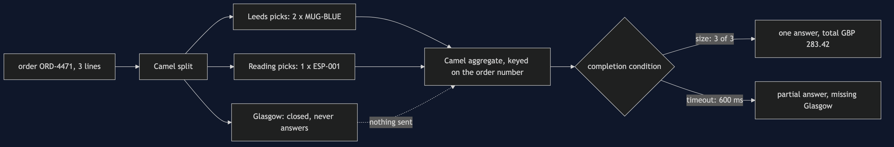
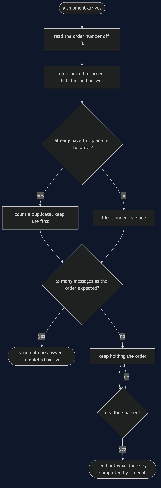
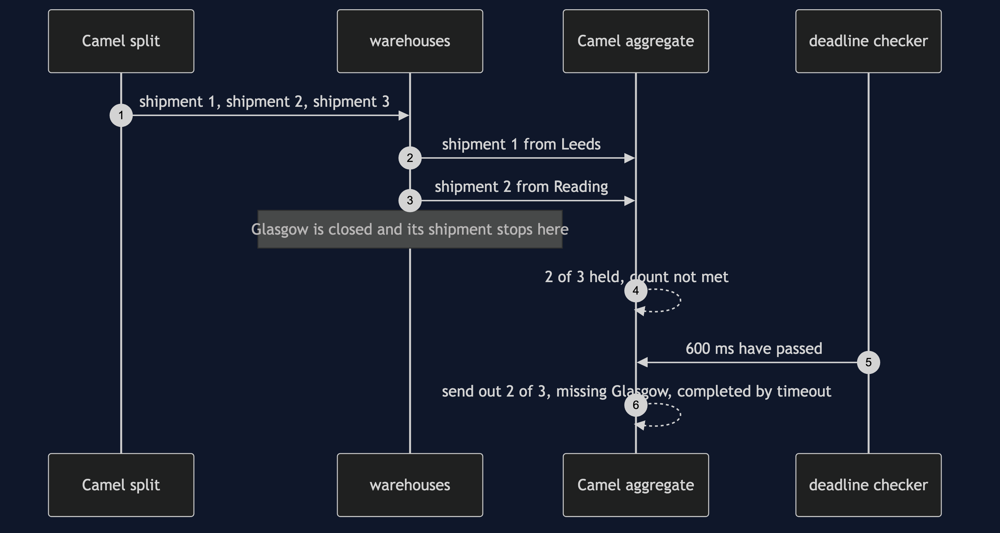
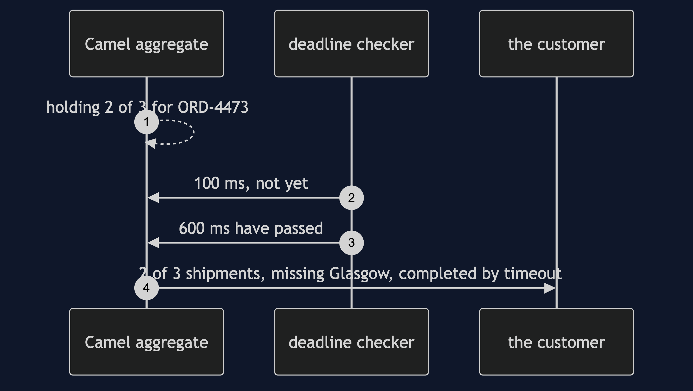
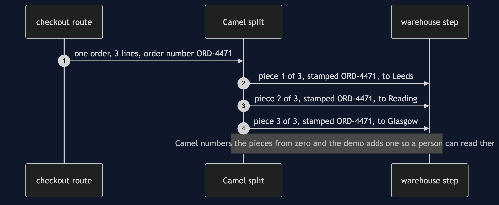
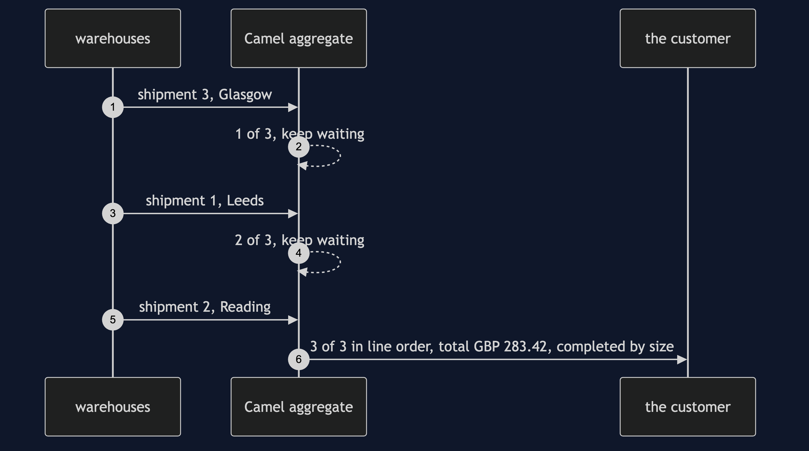
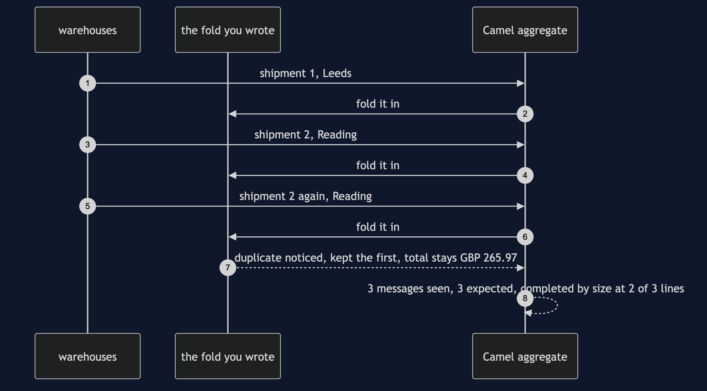

Splitter and Aggregator with Camel Pattern
src/main/java/com/jk/explore/splitteraggregatorcamel/
├── CamelSplitterAggregatorDemo.java the six acts
├── Store.java starts and stops the Camel engine; sends the orders in
├── StoreRoutes.java the splitter, the warehouses, and three aggregators
├── ShipmentAggregationStrategy.java how two messages with one order number become one
├── Gathering.java the half-finished answer while the aggregator waits
├── Gathered.java the finished answer, and Camel's word for why it finished
├── Warehouse.java OnePicker.java the picking step, and the before picture
├── Order.java OrderLine.java Shipment.java Money.java Results.javaWith Camel, the splitter is one declared step and the aggregator is another, and the aggregator does nothing at all until a completion condition says so.
This project is the real-framework version of Splitter and Aggregator. That project built the mechanism by hand with a clock it controlled. This one runs the same idea inside Apache Camel. It does not re-teach the pattern. It shows the completion condition and the deadline, which the hand-built version quietly had for free, and it shows a shipment that genuinely never comes back.
Run
./gradlew runNo container, no broker and no network. Camel runs inside the demo's own process, and every number below is that run's own output.
ONE. One picker, one order.
order ORD-4471 has 3 lines, held in 3 warehouses: Leeds, Reading, Glasgow.
one picker walks all of them, one line after another: 3 steps of work on 1 thread, and the basket comes to £283.42.
while that picker walks, the other warehouses stand idle.
TWO. Camel splits the order.
ORD-4471 shipment 1 of 3 to Leeds: 2 x MUG-BLUE, £15.98
ORD-4471 shipment 2 of 3 to Reading: 1 x ESP-001, £249.99
ORD-4471 shipment 3 of 3 to Glasgow: 5 x TEA-050, £17.45
Camel numbered the pieces and copied the order number onto every one of them. that number is what puts them back.
THREE. They come back in any order.
the warehouses answered in the order: 3 1 2.
the aggregator finished, completed by: size. 3 of 3 shipments: [2 x MUG-BLUE from Leeds, 1 x ESP-001 from Reading, 5 x TEA-050 from Glasgow], total £283.42.
the pieces arrived jumbled and the answer came out in the customer's line order.
FOUR. The completion condition decides everything.
ORD-4472: Glasgow is closed and never answers. shipments back: 2 of 3. answers out of the aggregator: 0. orders still open: 1.
the only condition on this aggregator is a count, and 2 is not 3. nothing comes out, and nothing ever will.
FIVE. A deadline, which the simulation got for free.
ORD-4473: Glasgow is closed again, but this aggregator also has a deadline of 600 milliseconds, looked at every 100.
the aggregator gave up on its own. completed by: timeout. 2 of 3 shipments, missing [Glasgow], complete: false, gathered so far £265.97.
orders still open in that aggregator: 0. the wait ended without anybody asking it to.
SIX. The bill.
1000 orders each missing one shipment: 1000 orders held in the aggregator's memory, and a restart loses every one of them.
a shipment delivered twice: Camel counts messages, not distinct pieces, so ORD-9001 completed by: size at 2 of 3 lines, with 1 duplicate noted.
the fold has to check for itself: £265.97 with the check, £515.96 without it.
and the order number has to be unique. two orders sharing one number are gathered into a single answer, because that number is all the aggregator has.Test
./gradlew test2 test classes, 9 test methods, offline, with the Camel engine started inside the test. Nothing under src/test sleeps for a fixed length of time. The route steps are synchronous, so a send has finished when it returns; the one wait in the whole suite is the aggregator's own deadline, and it is a bounded wait on a real event that fails loudly rather than hanging.
What the simulation got right, and what it left out
This is the reason this project exists, so it comes before anything else.
What Splitter and Aggregator got right. All of the shape. One message becomes several. Each piece carries the order number it belongs to and its own place in the order. The aggregator keys on that number, puts the pieces back in the customer's line order however jumbled they arrived, counts a repeated piece once, and gives up on an order that has waited too long. Two orders running at the same time never mix. A thousand unfinished orders cost a thousand slots of memory. Every one of those lessons is true of Camel, and the hand-built version teaches them in a hundred lines you can read in one sitting.
What it left out, first: the completion condition is a real decision. In the simulation the aggregator completed when the number of pieces it held equalled the number the first piece announced. That test was written into the method, so it could not be got wrong. In Camel the completion condition is a separate thing you have to supply, and if you supply none the aggregator holds every order for ever and never emits anything. This demo's fourth act shows an aggregator whose only condition is a count: two shipments came back, three were expected, nothing came out and nothing ever will.
Second: the deadline needs a clock that runs. The simulation had a Clock class the demo could push forward by thirty minutes in one statement. That is a comfortable lie. A real deadline needs something watching the time while everything else carries on, and Camel runs exactly that: a background checker that looks at each waiting order on an interval. The fifth act sets a deadline of six hundred milliseconds and a checking interval of one hundred, and the aggregator gives up without anyone asking it to. Camel records why it finished, and the demo prints Camel's own word for it: timeout, rather than size.
Third: a piece that never comes back is a real event, not a skipped line. In the simulation, a missing part meant the demo simply did not call accept for it. Here the Glasgow warehouse is on the message's path and the message stops there, because the route's filter finds no reason to send it on. Nothing downstream is told. The aggregator learns of the loss only by the clock.
Fourth: Camel counts messages, not distinct pieces. This one is a genuine surprise and the simulation cannot produce it. Camel's completion-by-size counts how many messages have been folded into an order, not how many different pieces of it are present. In the sixth act the Reading shipment is delivered twice, so three messages arrive, so Camel declares the order finished — with only two of the three lines in it. The duplicate check is yours to write, and without it the customer would have been charged £515.96 instead of £265.97.
What Camel adds that is simply free. It numbers the pieces of the split itself, and copies the order's headers onto every piece, so the correlation the pattern depends on is done for you. It can put the waiting orders somewhere other than memory. And a route can be read top to bottom as a description of the path a message takes, rather than reconstructed from a class diagram.
Technologies and versions
| What | Version | Why it is here |
|---|---|---|
| Java | 21 | The repository standard, via the Gradle toolchain block |
| Gradle | 9.2.1 | The wrapper in this directory |
| Apache Camel | 4.20.0 | The routing engine: the splitter, the aggregator and its completion conditions |
| slf4j-simple | 2.0.16 | Camel's logging, held at error so the demo's own output is the only output |
| JUnit 5 | 5.10.2 | Test runner |
No container runtime is needed for this project, and nothing is downloaded at run time. See docs/dependencies.md.
Learning Material
| Document | What it covers |
|---|---|
docs/problem-statement.md | The partner's version, and what is new |
docs/splitter-aggregator-with-camel-pattern-explained.md | A real completion condition, a real deadline |
docs/class-diagram.md | The types |
docs/architecture-diagram.md | The routes, and where a message stops |
docs/data-flow-diagram.md | What the aggregator does with one shipment |
docs/sequence-diagram.md | Written for a listener with the screen off |
docs/uml-diagram.md | Four sequences |
docs/animation.html | The six acts in a browser |
docs/prerequisites.md | What you need to know |
docs/session.md | A one-hour taught session |
docs/dependencies.md | What Apache Camel is, what it costs, and that skipping this project loses none of the pattern |
docs/spec.md | The generated specification |
docs/youtube.md | Title, description and chapters |
The pattern in one picture

Where each piece sits

How one request moves

Who calls whom, in order

All four sequences




Video
Built from video/scenes.py by video/build_video.sh. The rendered file is not committed; see the repository README for why.
Where you have already met this
Any integration that fans one document out and gathers the answers: an order sent to several suppliers, a batch file broken into records, a quote request priced by several insurers. Camel's split and aggregate, Spring Integration's splitter and aggregator, and the scatter-gather step in most workflow engines are all this pattern with the completion condition made explicit.
When this is too much
If the pieces are quick, or each piece needs the one before it, splitting costs more than it saves. If you never need a deadline, because nothing can go missing, the hand-built version in the partner project is smaller and clearer. And a framework is a thing to learn: a route file is easy to read and hard to guess.
Where this sits
This project pairs with Splitter and Aggregator, and is the real-framework version in messaging-integration-patterns.